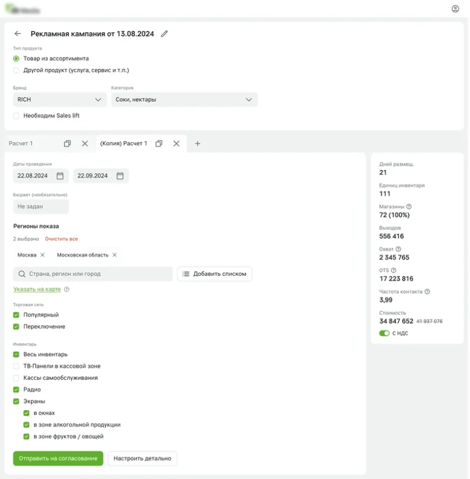
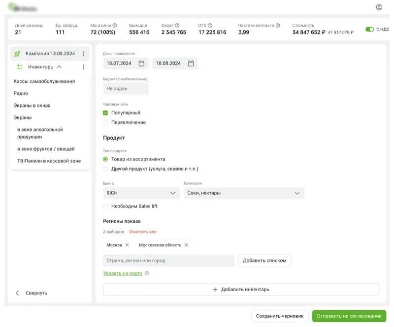
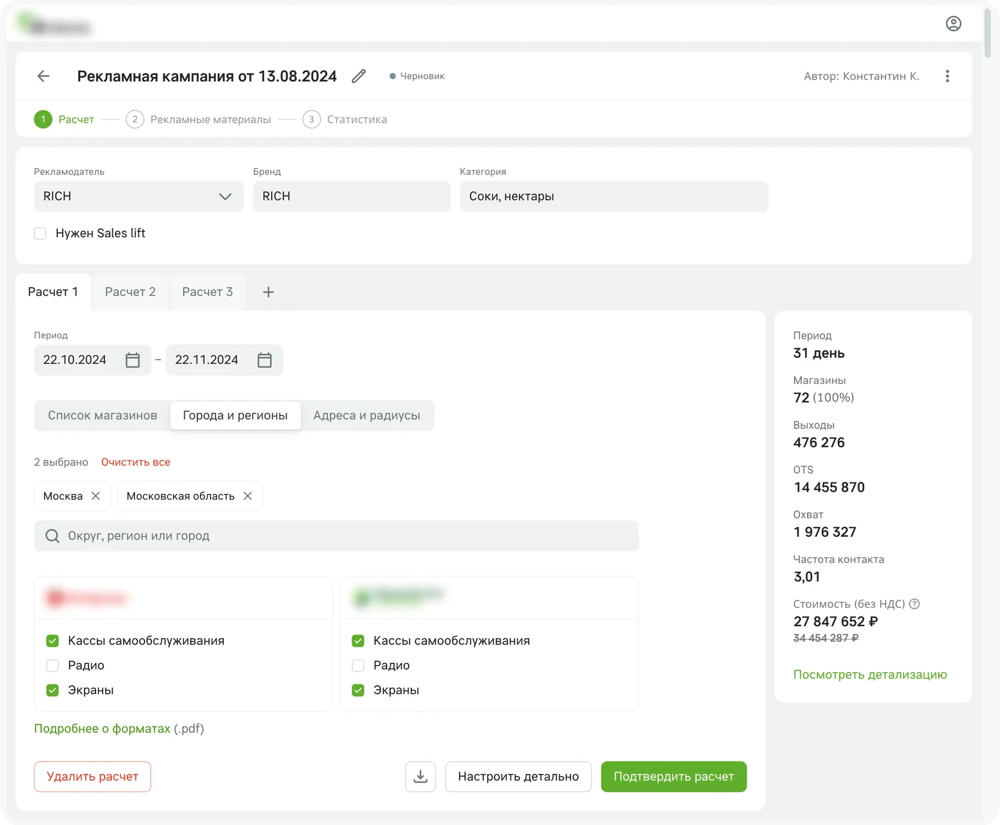
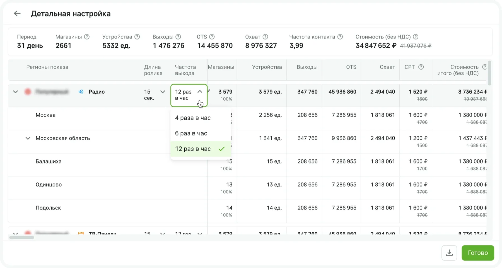
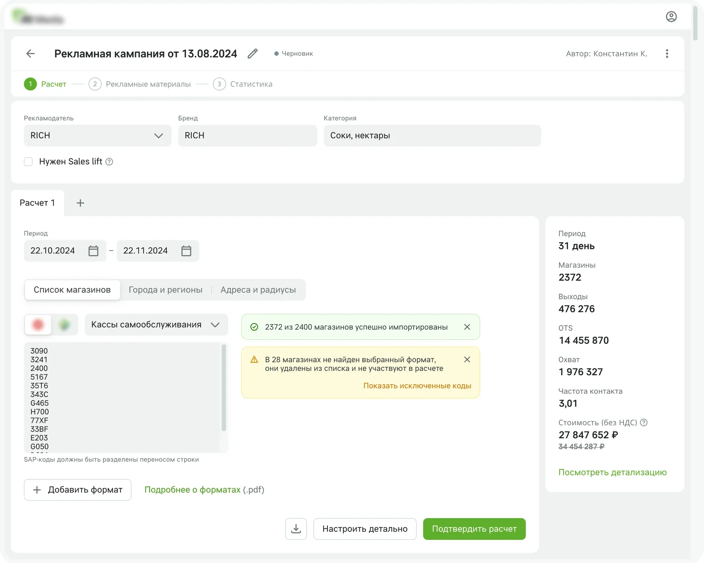
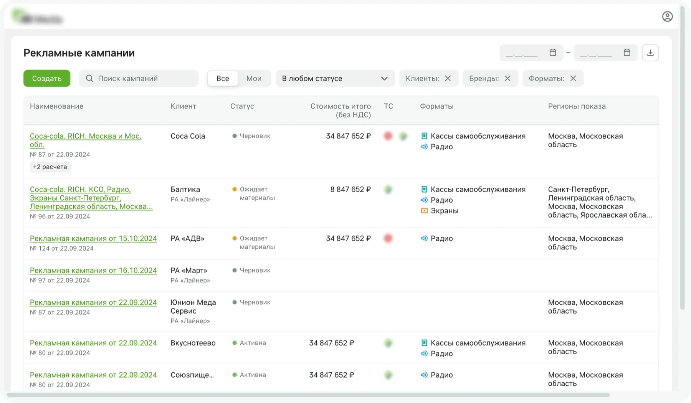

Каждое изменение возвращало менеджера в таблицу
Рынок instore-рекламы быстро растёт, и конкуренты начали разрабатывать собственные кабинеты. А внутри всё считалось вручную:
- менеджеры тратили часы на пересчёты и согласования, актуальную версию калькулятора приходилось запрашивать, а ошибки в расчётах замедляли работу с клиентом;
- у клиента не было единого места, где видны все его кампании;
- статистику собирали долго, а клиенты хотели видеть её как можно быстрее.
Кейс про первые две проблемы, статистика — следующий этап кабинета.
Первыми пользователями должны были стать крупные рекламные агентства и собственные менеджеры, позже прямые рекламодатели и средний бизнес. Почти все они уже работают в Яндекс Директе, VK Рекламе и Ozon, поэтому кабинет опирается на привычные им паттерны.
Начать с собственных менеджеров предложил продакт-менеджер: основные потребности у них те же, что у агентств, но так можно быстрее проработать сценарии и проверить скорость и качество расчётов, прежде чем пускать в продукт внешних пользователей.
Каждая находка интервью стала решением в интерфейсе
Я провёл пять интервью с пользователями и экспертами, чтобы понять контекст, найти боли и вместе с продуктовой командой расставить приоритеты. Отдельно разобрал кабинеты онлайн-рекламы (VK Реклама, Яндекс Директ, Ozon, Wildberries, Facebook Ads Manager) и наружной рекламы. Готовых кабинетов у прямых конкурентов на тот момент ещё не было.
| Что выяснили | Решение |
|---|---|
| Географию задают тремя способами: города-миллионники, список магазинов от поставщика по SAP-кодам, адреса «точек интереса», вокруг которых нужно подобрать магазины | Три способа выбора географии в одной форме: города и регионы, список магазинов, адреса и радиусы |
| Менеджеры готовят несколько версий расчёта с разными параметрами и согласуют их с клиентом | Версии расчёта как вкладки браузера |
| Рекламодатели хотят видеть прогноз, подтверждённый исследованиями | Прогноз охвата, OTS, частоты контакта и стоимости виден сразу, у показателей есть подсказки. Логика прогноза перенесена из Excel-калькулятора менеджеров |
Быстро посчитать, затем уточнить
Я предложил два концепта страницы расчёта. В первом всё на одной странице: версии расчёта во вкладках, прогноз справа. Во втором кампания собирается из блоков инвентаря в боковой панели, а прогноз виден в строке сверху. После показа пользователям выбрали первый: он проще, гибче и оставляет место для развития интерфейса.

Концепт 1: версии во вкладках, прогноз справа
Концепт 2: блоки инвентаря в боковой панели, прогноз строкой сверху1. Версии расчёта как вкладки браузера
Менеджеру нужно сравнить несколько вариантов кампании и показать их клиенту. Вкладки — простой и знакомый шаблон: можно завести до 10 версий расчёта и переключаться между ними, не теряя ни одной.
2. Быстрый расчёт отдельно от детальной настройки
Менеджеру нужно быстро прикинуть разные варианты географии и форматов, но иногда и подкрутить параметры в конкретном городе. Я разделил расчёт на два слоя. В быстром задаются период, бюджет, география, торговые сети и форматы, и прогноз виден сразу. В детальной настройке меняются частота выходов, доля магазинов в регионах и длина ролика для каждого формата.


3. Расчёт по списку магазинов
Поставщики часто приходят со своим списком магазинов. Его можно вставить списком SAP-кодов, а кабинет сразу покажет, какие магазины не нашлись или не подходят под выбранный формат.

После теста убрали лишние настройки
Я собрал интерактивный прототип расчёта и детальной настройки, и мы провели 5 тестов с элементами интервью. Задания выполнили все участники, но тест показал, где интерфейс сложнее, чем нужно.
Одно упрощение было не про поведение участников, а про сложность реализации. Удаление городов и регионов из расчёта отложили: оно давало много пограничных случаев, а исключить город можно и так, поставив ему 0% магазинов.
Вместе с аналитиком мы проработали больше 30 сценариев, включая пограничные случаи и ошибки.
Расчёт и все кампании в одном месте
Кроме расчёта, для первой версии я подготовил статусы кампании, список кампаний с поиском и фильтрами, профили пользователя и организации.

Выводы
Тест сделал интерфейс проще. Самые полезные изменения после теста — то, что мы убрали: настройку периода по городам и закрытие вкладки крестиком.
Расчёт стал основой кабинета. Следующим шагом в тот же кабинет переехала загрузка рекламных материалов, и запуск кампании целиком прошёл внутри продукта.
Что сделал бы иначе. Предложил бы разработчикам взять shadcn/ui и не тратил бы время на собственную библиотеку компонентов.